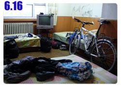
Being staying up late these days, my daily routine was somewhat messed up,
I used to sleep at 9:00ish pm, get up at 5:00ish am and then be ready to set off.
Now, not going to bed until 2 or 3 am, it was hard to drag myself out of bed in the morning.
If managing to get up early, I would feel off the whole day.
If sleeping in, I would arrive in the destination late and end up with the late cycle again.
Moreover, the sun and the time zone confused me totally.
My watch still stayed in Taiwan time zone. Kazakhstan about 400 km away was two hours behind my current time zone.
Sun went down at 10:30pm in west Xinjiang. With that said, the sun would go down at 8:30pm in Kazakhstan.
The different time zones screwed me up. Hopefully I could adjust it.
Breakfasting at Hangzhou Steam Bun recommended by the hotel owner, a basket of yummy buns and savory tofu pudding,
I preferred sweet tofu pudding, the savory one tasted like sweet and sour soup.
[Note: tofu pudding is known as douhua or doufunao]
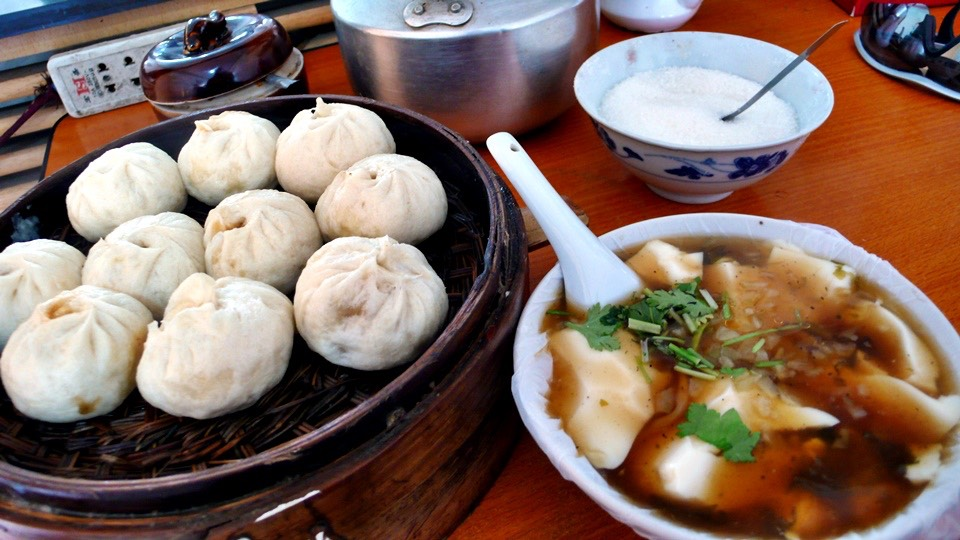
By the time the breakfast was finished, it had been 10:00am.
I was about 500 km far from the border. My Kazakhstan visa would take effect on June 24.
Even if I arrived at the border early, I still could not enter Kazakhstan early.
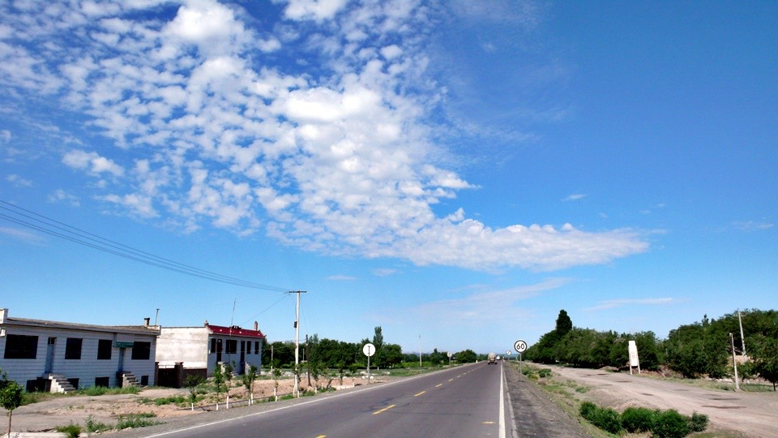
No solid plan for today, either riding casually toward the border or keeping up my regular pace
and getting into the border early and fully resting before entering Kazakhstan.
Anyway, let’s get going. I would ride as far as I could and stop if feeling tired.
I was repeatedly asked by the same question: “Don’t you get tired by the long ride?”
“No ~ Why ? I rest when tired, eat when hungry, sleep when dark. I am carefree by myself”
With the same spirit, I would ride as far as I could today ~
Dido was up on the bridge, what was I doing down below?
Oh, well, there were things you could not hold -- I drank too much …..
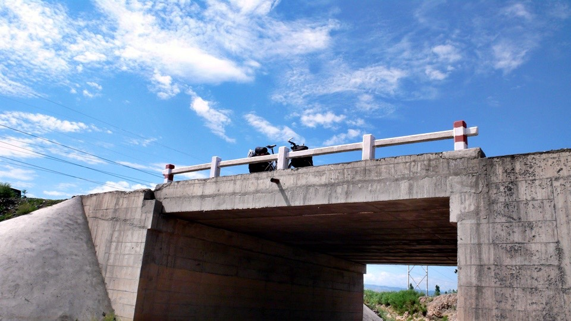
Passing many little rivers with chocolate brown water along the way,
I wondered something went wrong in their headstreams that muddied the water?

After Urumqi some place names did not sound and feel like Chinese,
such as Hutubi and Manasi since they were translated phonetically to Chinese.
I rolled out of Dafen town and reached Manasi at noon with ease.
From here on, these huge chimneys appeared in every town like accessories.
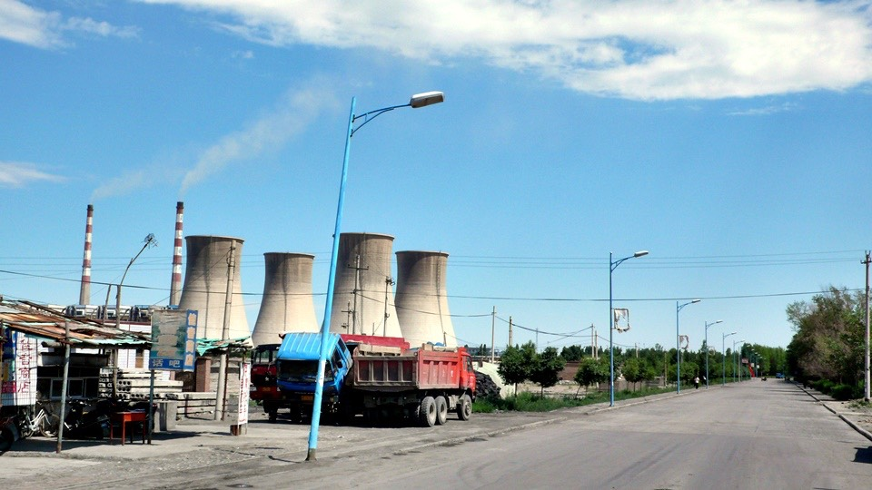
I ordered a bowl of meat ball soup in the suburb because I just had breakfast at 10:00am, a bowl of meat ball soup should be fine for lunch.
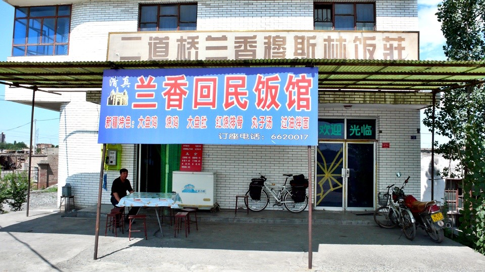
It turned out that a set meal was served. The restaurant owner must get it wrong,
so I repeated my order and why other dishes were served?
The meat ball soup came with two free wowotou and a free appetizer.
[Note: wowotou is multi-grain steam bun]
The appetizer was tomato, onion and bell pepper salad with a pinch of hot spice.
The soup had quite a few sliced lamb meats that were fancier than what I ever had before. The lunch filled my up.
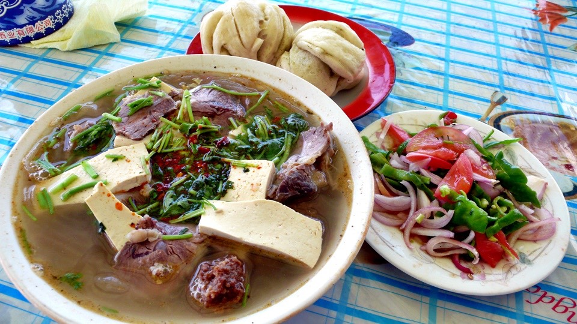
It was my habit consulting people for travel information,
such as the road condition or travel distance which was like RPG game asking pass-by people for information.
I did it just for fun when playing computer game and always skipped the conversation.
In the real life, sometimes I started a chat for the sake of conversation,
and did not really care about the content unless it would have impact on me.
The man taking a rest by the door in the restaurant during lunch was incredibly misleading.
Shihezi was about 10 km away, but he told me it was about 50 km away.
My China atlas with a blue cover had mailed back to Taiwan in Urumqi.
The one I had was bought in Urumqi still good enough for the rest of the trip.
I thought I made a mistake, digging the map out and checking it up.
I was sure that the serious looking man was bluffing.
For my next question how far from Huoerguosi here, he said another 800 km but the truth was 400 km.
Bluffing like that, weren’t you afraid of getting a liar’s long nose?
It reminded me that a few days ago in somewhere I was asked what to do if getting lost.
My answer was asking around. There would be always somebody to help out.
The owner wanted me to be watchful since someone might bluff me and send me to the opposite direction.
I had not met a single bluffer along the way except that Uncle Pinocchio.
I took a nap by the door till 1:00pm or so when the youngest son of the store owner came back.
He was curious about Dido so we had a brief conversation.
He was having a high school entrance examination in three days, if passed,
he would move to Jichang, the city that I rode through the other day, and attend a boarding school.
Regardless the result, right after the test, he would ride with his friends to Urumqi to relax themselves.
I had been there and knew the feeling when preparing my own high school entrance exam.
Back then, nothing was worth doing except study.
Study was only for exam, and exam was for getting into another school to continue education.
I gladly failed the high school entrance exam that gave me the chance to meet my good friends in the five year junior college.
The days in my junior college were the happiest time of my school days. The key was being independent at the boarding school.
I seriously told him to do his best. Once passed, he could start a bright new life!
He said be careful to me and I wished him a good luck with his exam – I left at 2:00pm.
Shortly after Manasi I passed through Shihezi without detouring into the downtown and continued toward the west.
The next town Shawan was 30 km away followed by Kuytun100 km away.
I was thinking to get to Shawan and call it a day. If riding for another 100 km, it would be overdone.
Along the way, the number one beautiful scenery was the changeful clouds in the sky.
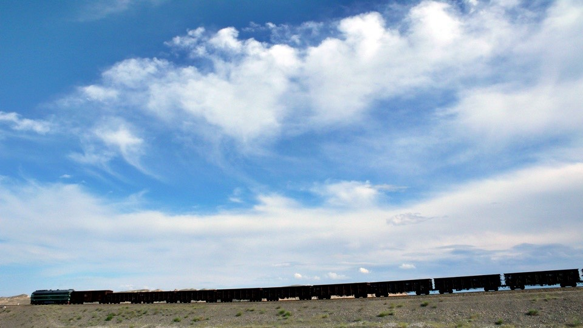
No cloud was right above my head, they were over the mountains in the distance
It seemed that the clouds were too lazy to float in the sky but stayed low at the foothill – very laid back clouds.
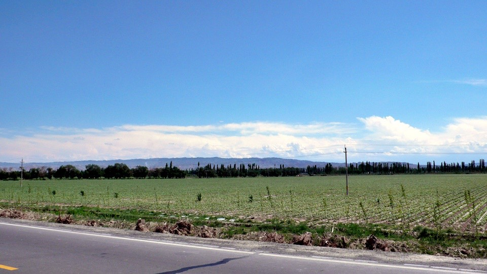
The road was unusually no longer lined with restaurants or auto repair shops but flower nurseries,
one nursery next to another. Shawan was a flower town.

Then, I pulled into Huayuan town, a beautiful name.
It had a good looking entrance and big buses were not allowed. I toured the town in flower scent on Dido.
[Note: Huayuan in Chinese means Garden]
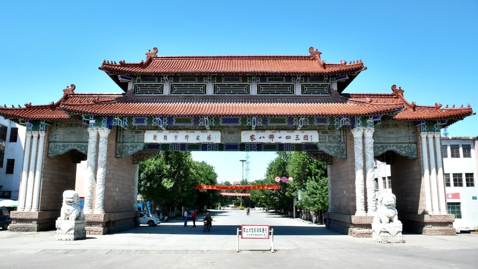
At about 4:30pm I arrived in Shawan feeling looking for a hotel and calling it a day.
Then I would go to bed earlier tonight and get up earlier the morning after. However, the other part of me felt like riding a bit more.
There was no such thing - “a bit more”. If not staying in Shawan tonight, I would have to ride another 4 hours to get to the next city.
The other frequently asked question was “why don’t you find a riding companion?”
Riding alone is carefree – I can eat whatever I want to eat, go where I want to go,
and rest whenever I felt like to. Time would not be spent on discussion and compromise.
That reminded me of Natu. It was my first time riding with a companion. I really did not know how to get along with her.
At meal time, we passed one restaurant next to another till reached the end, but still could not decide which place to go.
Finally a place was picked then we had to decide which table to sit, by the window or by the door.
The worst part was ordering, eating separately or sharing? Did she has eating taboo?
That was only about eating. If taking accommodation, destination, rest time,
rest spots, riding routes, riding speed and even how to handle money into account,
I would either kill myself or murder my companion and buried the dead body in the desert to clean up the crime evidences.
Being alone was excellent! 10 seconds of thinking, I decided to continue on, completely free of arguing.
Even though I pushed on, there was no need to push on to Kuytun. I could stop at anytime as long as there was an accommodation.
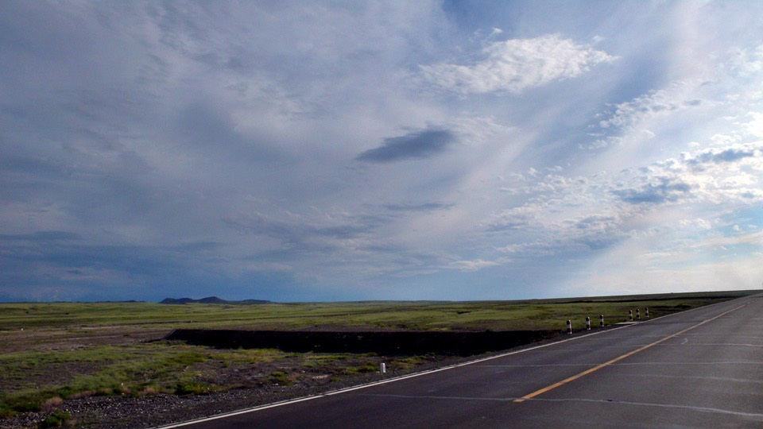
In addition to farmers, ranchers and many factories in this area, it also had coal mine.
Luckily, there was no coal trunk running around and kicking up coal dust.
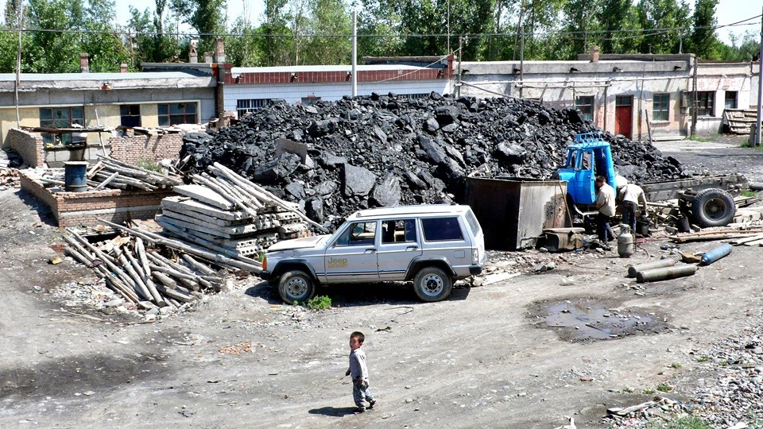
Usually I would find a hotel before dinner, today I did dinner first and then continued my ride.
In the suburb of Shawan, I had stir-fried noodles at a muslin restaurant which won’t catch your eyes.
It seemed that if I did not ride into Kuytun there would be no accommodation along the road.
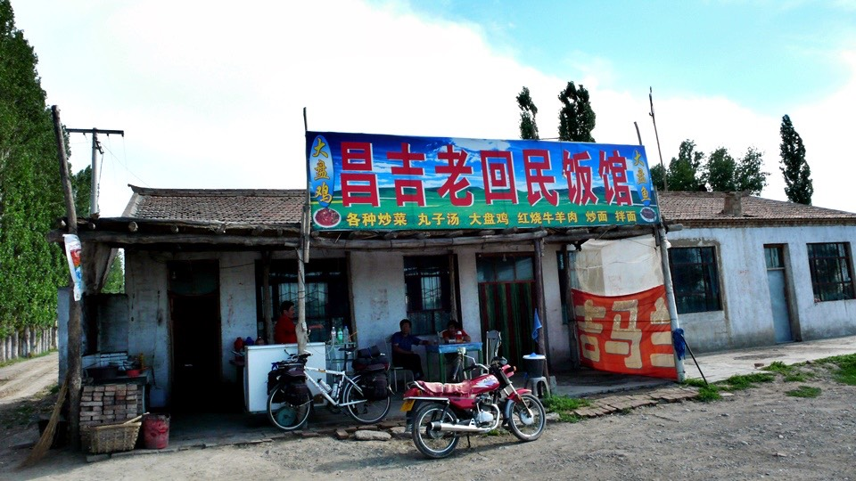
40 km to ride after dinner - Today I had plenty of exercise after all three meals, hopefully that won’t did damage to my stomach.
I stocked up on snacks before dinner to get ready.
Since my bags were crowded with new supplies, I had to stuff the snacks into my coat packets.
I would get something from my pocket when craving goodie.
It felt like Doraemon that I could conjure practical tools out of my pocket.
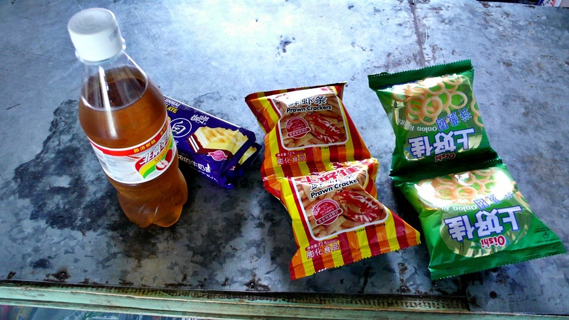
[Note: Doraemon is a Japanese manga series about a robotic cat named Doraemon
who possesses a fourth-dimensional pocket from which he can produce futuristic tools and gadgets]
All other customers in the restaurant had been to Huoerguosi that seemed normal
because Huoerguosi was no far from here. Everybody said Huoerguosi was a big city.
In my imagination, border was an endless tall wall studded with barbed wire
with immigration officers equipped with loaded guns at the border-crossing gate.
The border surrounding should be arid and barren and could not be busy and bustling. My imagination seemed totally wrong.
I had never seen a border in my life.
Without being in Huoerguosi and seeing with my own eyes, I won’t have an idea what a border would look like.
The information from the restaurant owner was much accurate
and practical than the Uncle Pinocchio which was 9 km of uphill, 9 km of downhill and then flat road all the way to Kuytun?
The downtown Kuytun was not on the main road,
but there were many accommodations and restaurants along the main road. It was ok not to get into the downtown.
It was estimated to arrive in Kuytun by 10:00pm.
The sun came down around 10:30 pm and the sky was still bright at 10:00pm so I was not under pressure by riding in dark.
The road condition was exactly as the restaurant owner described. I arrived at the bustling area along the main road.
After checking in a hotel, I would be able to take a sponge shower and do my laundry.
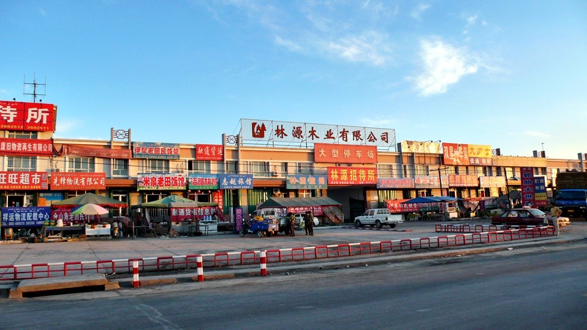
The air here was not as dry as the Gobi desert in Gansu, more humid.
Therefore, my clothes were wet with sweat. If I did not wash them everyday, they smelled like picked cabbage the next day.
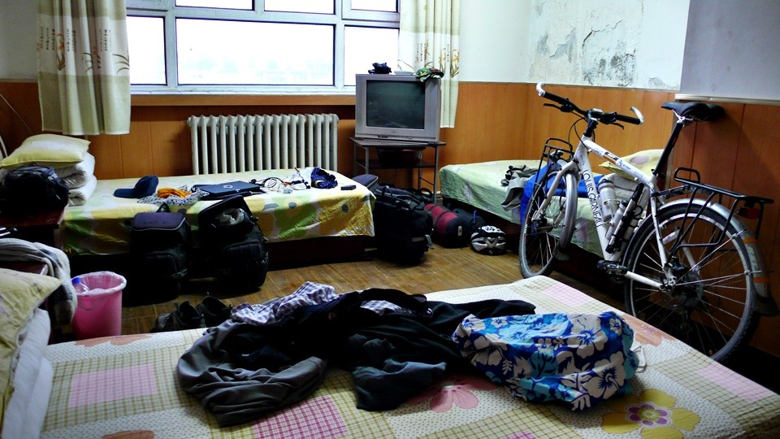
The hotel owner was very nice who let me have a room accommodating
four to myself even though there was space available in another room.
I felt a bit embarrassed when handing over only 15 RMB for such spacious room.
I would restore the room before checking out. Thanked the owner who let me sleep well and worry free.